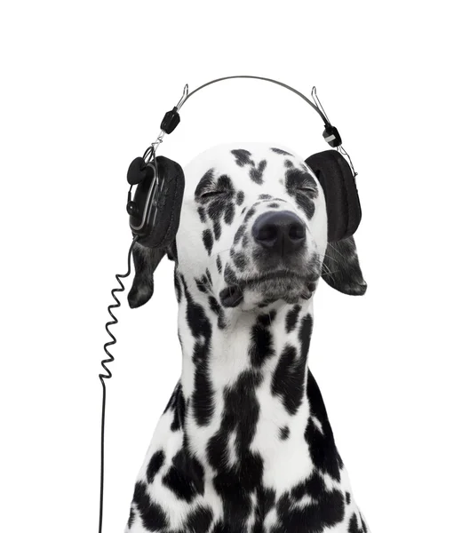
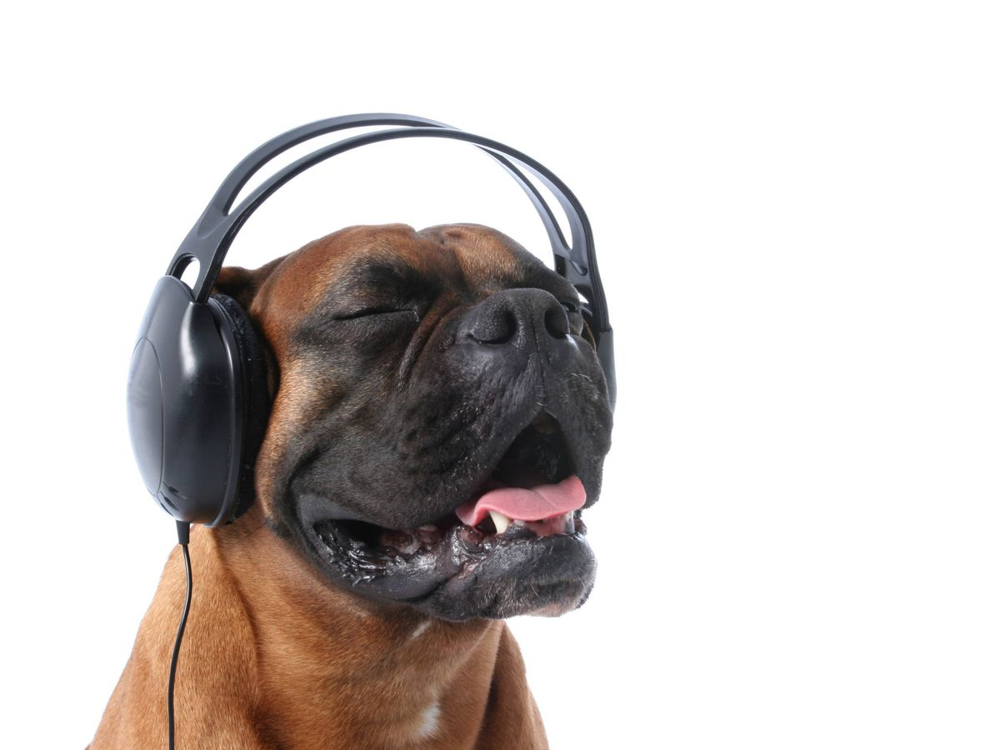

Perros con audífonos
A los perros les gusta la música, pero el tipo de música marca la diferencia. Prefieren los ritmos más lentos, patrones simples y las frecuencias más bajas. Por el contrario los ritmos rápidos, la música más compleja (con muchos instrumentos) y las frecuencias más altas cargan el sistema nervioso canino. Se comprobó, que cuando los perros escuchan música clásica, cambiaban su comportamiento ya que se volvían más relajados e incluso ladraban menos. Sin embargo, los perros a los que se le ponía Heavy Metal, provocaba en estos estrés, ansiedad y nerviosismo.
Son capaces de oír frecuencias que nosotros ni siquiera escuchamos. Los perros tienen un rango de audición de 10,000 a 50,000 Hz, el del ser humano sólo abarca de 16,000 a 20.000 Hz, y la distancia a la que puede escuchar es cuatro veces más a la del hombre.
Chihuahua
El chihuahua o chihuahueño es una raza de perro originaria de México. Es una de las razas de perros más antiguas del continente americano, además de ser el perro más pequeño del mundo. Es originario del estado de Chihuahua. Sin embargo, a diferencia de lo que muchos creen, no es la razón de su nombre, ya que en la lengua del pueblo rarámuri significa "lugar árido y arenoso". El nombre original de este ejemplar es chihuahueño y su variación se debió a la manipulación en Estados Unidos para referirse a la raza.
Los chihuahuas pueden presentar muchos colores, desde negro sólido hasta blanco sólido, manchados, o en una variedad de colores como cervatillo (café), chocolate, azul (gris), plata, tricolores (chocolate, azul, o negro y blanco con marcas cafés y blancas), con líneas, y moteados. Cada uno de estos colores varía en tonos e intensidades; por ejemplo, café puede ser un término para describir a un perro desde un crema muy pálido hasta un café oscuro (casi rojo), o cualquier tono en medio. Algunos tienen una talla muy pequeña de estatura y podrían caber en un bolso de tamaño medio.
Los chihuahuas son perros ideales para personas que viven solas, para quienes tienen dificultades físicas o para ancianos, ya que su pequeño tamaño los hace ideales para alzarlos o tenerlos en el regazo. La ternura y amor incondicional que ellos les brindarán los hace uno de los mejores perros de compañía.
Dálmata
El dálmata es una raza canina que debe su nombre a la histórica región de Dalmacia. Su característica principal es su singular pelaje moteado de color negro, hígado o limón. Al nacer, las crías carecen de manchas, las cuales van apareciendo por todo su cuerpo durante el primer año de vida. La hiperuricemia es común entre los dálmatas, por lo cual suelen ser considerados los únicos mamíferos uricotélicos. Otro rasgo de origen genético propio de la raza es su alta predisposición a la sordera.
El dálmata es un perro bien equilibrado, distintivamente moteado, fuerte, musculoso y activo. De perfil simétrico, libre de tosquedad y pesadez de movimiento, como perro antiguo de coche es capaz de gran resistencia y buena velocidad. Esta raza de perros está conformada por animales de buena musculatura, de tamaño mediano, con una gran resistencia; tiene un cuerpo similar al Pointer. Las patas son redondas con dedos bien arqueados y las uñas son blancas o del mismo color que las manchas. La trufa (nariz) es del mismo color que las manchas. Los ojos son pimentón oscuro o ámbar. Las orejas son blandas, afinándose hacia la punta, las llevan dobladas sobre sí mismas cayendo hacia delante. Cuanto mayor sea la definición de las manchas, equitativa su distribución y tamaño (manchas grandes en el lomo haciéndose más pequeñas hacia la ingle) más valorado será el perro.
Bóxer
El bóxer (en alemán: Deutscher Boxer) es una raza canina alemana de trabajo y compañía, tipo moloso, de tamaño grande. La raza se creó a base de cruces con brabant bullenbeisser, bulldog de antaño, bulldog inglés y otras razas no documentadas. La primera vez en aparecer un bóxer fue en 1895 en Múnich por el Múnich Bóxer Club. Friedrun Stockmann y su esposo Phillip considerados los «padres de la raza bóxer» gracias a su criadero llamado vom Dom. Los sucesos bélicos en ese tiempo ocasionaron una considerable disminución de la raza, aunque ellos la mantuvieron estable.
El bóxer es un perro fiel, vigilante y activo. Requiere de ejercicio regular para evitar problemas de comportamiento, y adiestramiento para encauzar su energía. La raza tiende a ser dócil y leal a su familia, sin embargo, puede ser feroz, dominante y territorial, por lo que es necesario socializarlo desde temprana edad, ya que puede atacar con gran velocidad y potencia a otros perros (especialmente a los machos) cuando alguno de los suyos es agredido o prevé que puede serlo.
Entre sus características físicas se encuentran una cabeza elegante, mandíbulas pronunciadas, morro enmascarado, orejas de botón, ojos de color marrón, idealmente lo más oscuro posible, cuello largo, fuerte, elegante y musculoso. Pecho amplio y patas traseras musculosas. El bóxer tiene el pelo corto, brillante y suave, de color leonado o atigrado. Puede presentar manchas blancas, denominadas pseudo-irish spotting que incluso pueden llegar a tapar el color del pelaje entero.
Inicio